Máquina de Aprendizaje 1 · Universidad de La Sabana
Un modelo que aprende a reconocer, hora a hora, cuándo un paciente de cuidados intensivos empieza a encaminarse hacia la sepsis — antes de que el deterioro sea evidente.
1 Contexto de negocio
La sepsis no es la infección — es la respuesta desregulada del cuerpo ante ella, que termina dañando sus propios órganos. Es una de las principales causas de muerte en UCI en el mundo.
1 Contexto de negocio
Kumar et al. (2006), 2.731 pacientes con choque séptico: cada hora de retraso en el antibiótico correcto suma mortalidad, desde la primera hora.
A las 6 horas —la ventana que este proyecto premia más— el incremento medio ronda el 38% frente a tratar en la primera hora.
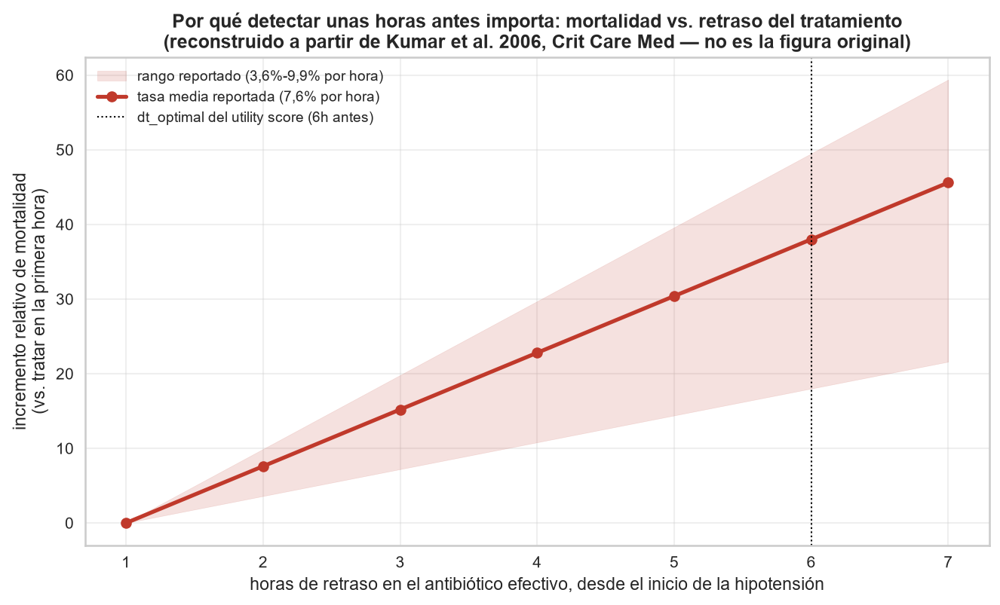
2 Problema
En la práctica clínica, la sepsis suele reconocerse cuando el deterioro ya es evidente.
Los signos vitales y los laboratorios de cada paciente ya se registran hora a hora en la UCI — pero nadie los está traduciendo, en tiempo real, en una señal de riesgo anticipada. La ventana de intervención efectiva se cierra antes de que el equipo clínico tenga un motivo estructurado para sospechar.
No falta información. Falta un sistema que la convierta en alerta a tiempo, dentro de las restricciones reales de una UCI: presupuesto de atención limitado, personal que no puede perseguir cada falsa alarma, y datos que llegan incompletos.
3 Objetivo
Desarrollar un modelo de clasificación capaz de anticipar el desarrollo de sepsis en pacientes de UCI a partir de sus variables clínicas horarias, como apoyo a un sistema de alerta temprana.
4 Metodología
PhysioNet / Computing in Cardiology Challenge 2019 — un reto internacional de investigación clínica.
No inventamos el problema ni la métrica: adoptamos un estándar ya validado por la comunidad — lo que hace nuestros resultados directamente comparables contra los de otros 88 equipos.
5 Datos y variables
Cada paciente es un archivo .psv con una fila por hora de estancia. Ni el paciente ni el hospital están en el archivo — se rescatan del nombre y de la carpeta.
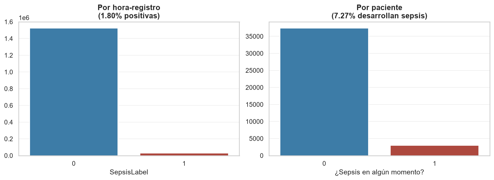
Dos escalas del objetivo: 1,80% de las horas vs. 7,27% de los pacientes
4 Metodología
Nueve notebooks, uno o más por fase, cada uno con evidencia propia — nunca una afirmación sin la celda que la sustenta.
4 Metodología
La métrica oficial del challenge premia detectar sepsis a tiempo, no solo detectarla: máxima recompensa 6h antes del inicio, castigo por no detectar, costo por cada hora de falsa alarma.
Con solo 1,80% de horas positivas, un modelo que nunca alarma acierta el 98,2% de las veces — y es clínicamente inútil. Por eso no optimizamos accuracy.
5 Datos y variables
Los signos vitales rondan 10–35% de nulos. 24 de los 26 laboratorios superan el 90%. No es un defecto: un monitor mide continuo, un laboratorio se pide solo cuando el médico lo ordena.
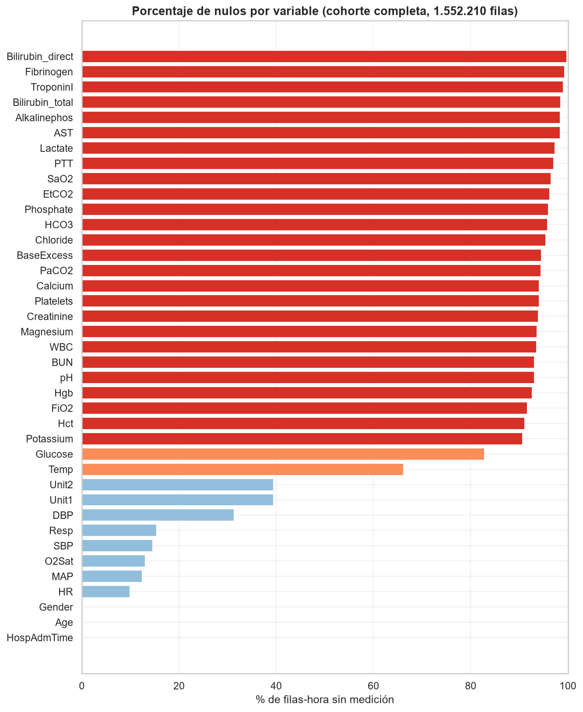
5 Datos y variables
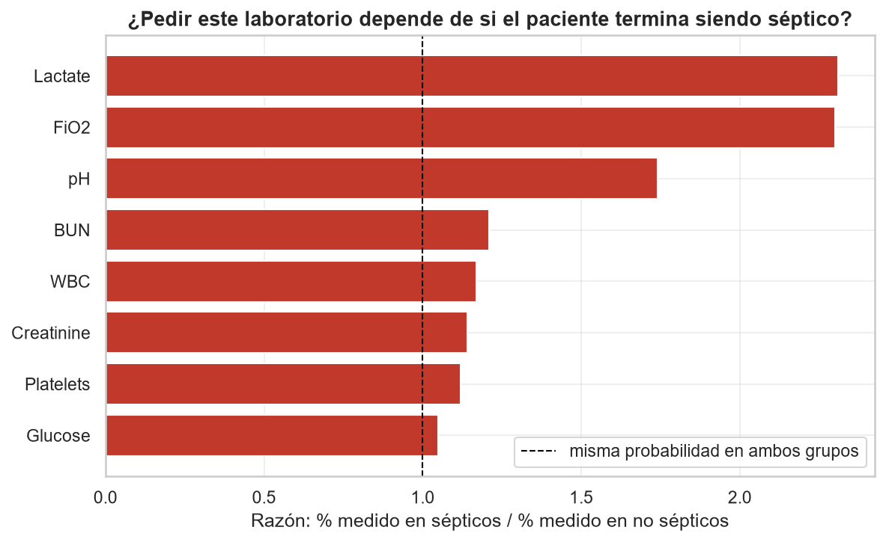
La sospecha del médico está en los datos antes que el diagnóstico. Por eso "no medido" se convierte en variable predictiva, no en un hueco que rellenar.
5 Datos y variables
46,8% de los pacientes de A no tienen tipo de unidad registrado, frente a 30,5% en B. Dos sistemas clínicos y administrativos distintos — no dos muestras del mismo proceso.
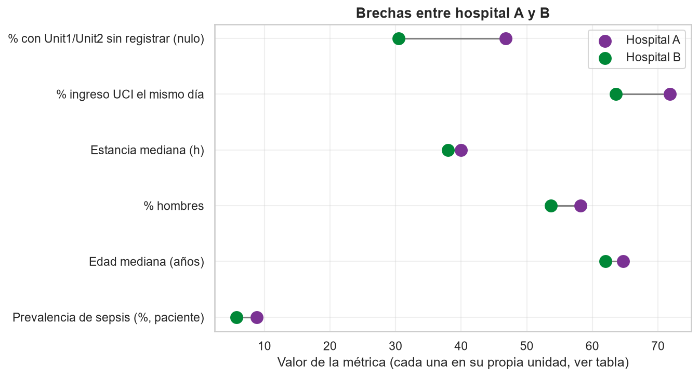
5 Datos y variables
La frecuencia cardiaca sube apenas 2,8 lpm en 30 horas alrededor del evento — pero el promedio esconde una heterogeneidad real: hay pacientes que suben, otros que bajan, otros planos.
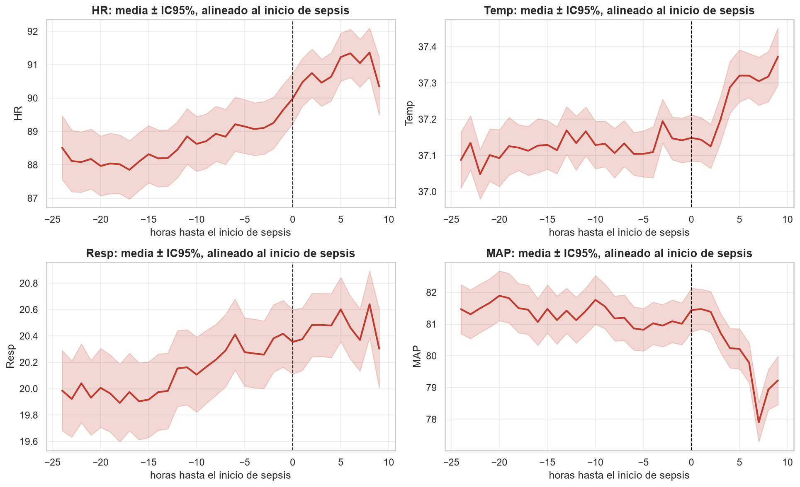
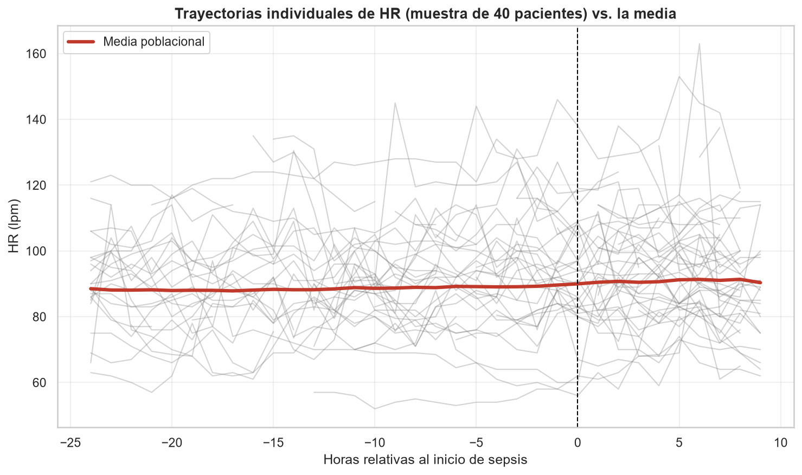
6 Modelo y solución
Ocultamos el 20% de valores reales y medimos el error de recuperarlos con cada método — no elegimos por intuición.
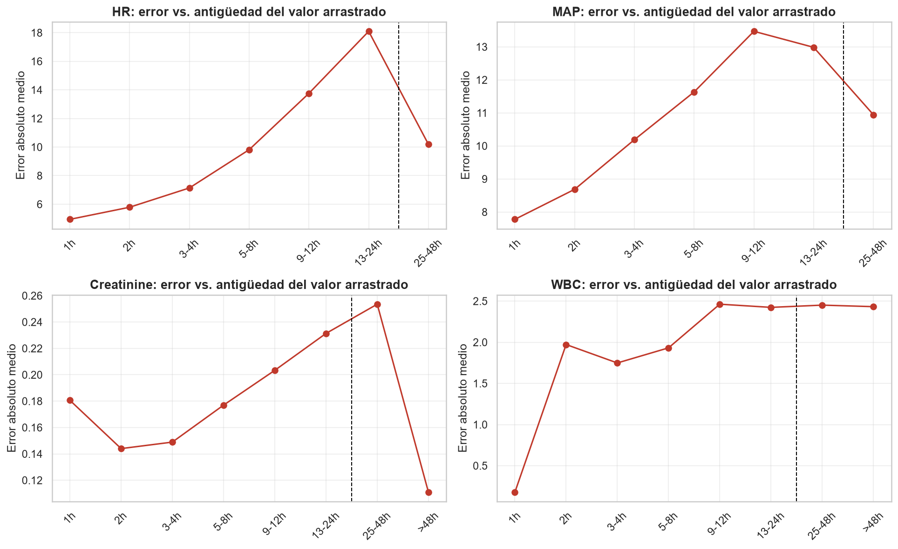
6 Modelo y solución
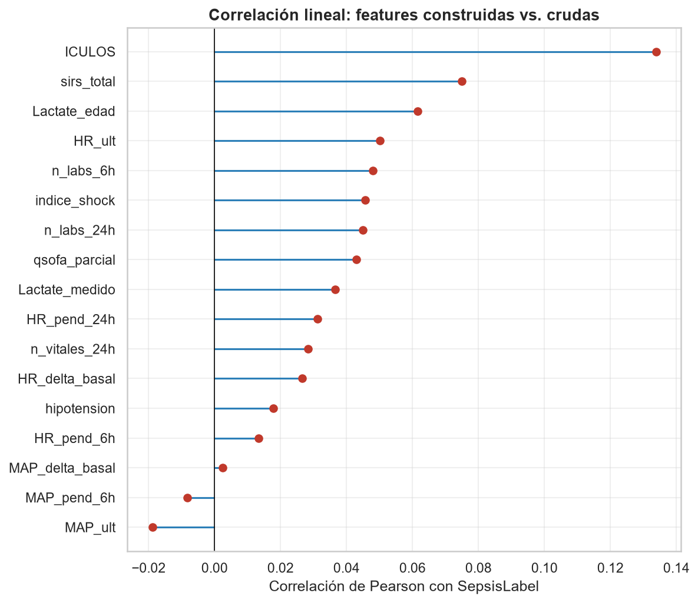
6 Modelo y solución
| Modelo | AUROC | AUPRC | Lift |
|---|---|---|---|
| CatBoost | 0,8497 | 0,1229 | 7,28× |
| XGBoost | 0,8429 | 0,1127 | 6,68× |
| HistGradientBoosting | 0,8375 | 0,1144 | 6,78× |
| LightGBM | 0,8281 | 0,1032 | 6,12× |
| GRU (secuencial) | 0,8165 | 0,1033 | 6,12× |
| Regresión logística | 0,8037 | 0,0869 | 5,15× |
CatBoost gana en las dos métricas a la vez — evidencia de que encuentra algo real, no un empate estadístico.
6 Modelo y solución
No se maximizó utility sobre el test — eso usa las etiquetas reales y sería fuga. Se fijó alarmando solo en el 5% de horas con mayor riesgo: el presupuesto que una UCI real toleraría.
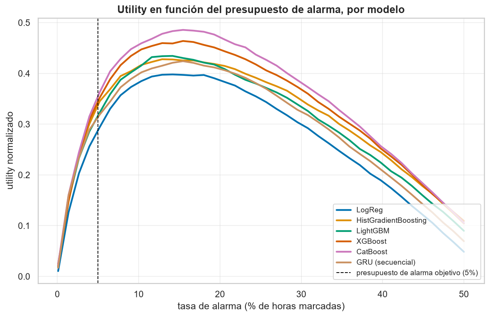
7 Interpretación de resultados
45 horas no es un número abstracto: es casi dos días de margen de reacción para un equipo clínico, en un problema donde cada hora de retraso cuesta.
7 Interpretación de resultados
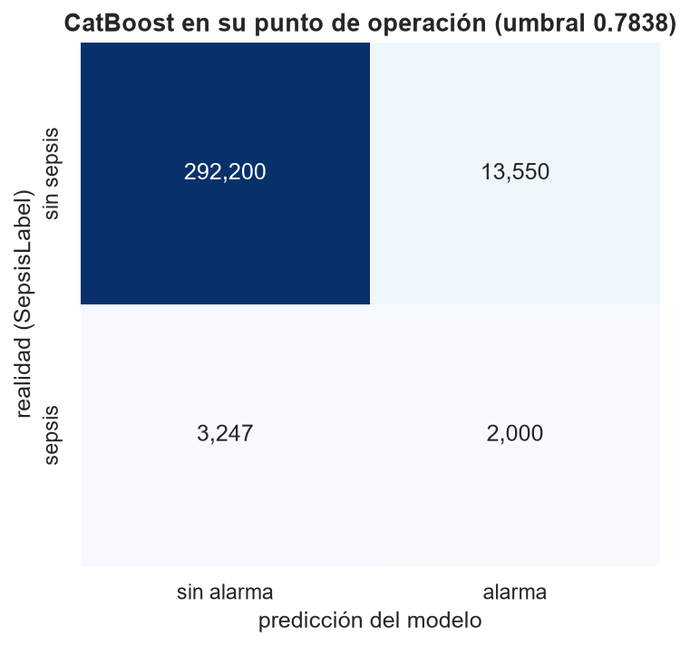
No es un defecto del modelo: es el costo estructural de operar con 1,69% de prevalencia real. El propio utility score ya lo penaliza con −0,05 por hora de falsa alarma.
7 Interpretación de resultados
Nuestro 0,3724 (A) y 0,3350 (B) quedan dentro del rango del top-5 oficial del challenge (0,40–0,43) en hospitales del mismo tipo.
El dato que más pesa no es nuestro: los cinco mejores equipos del mundo sacan utility negativo (hasta −0,123) en el hospital C que nunca vieron. Cruzar de hospital en sepsis es un problema abierto para toda la comunidad.
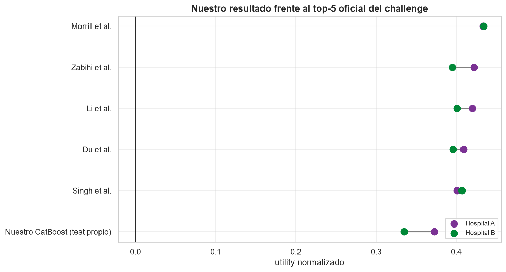
7 Interpretación de resultados
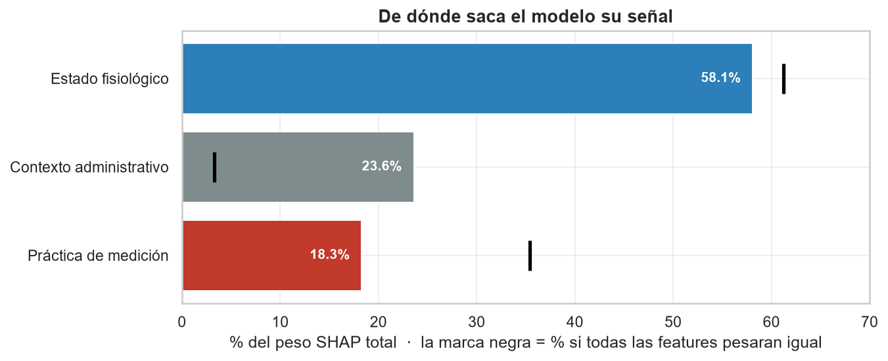
La señal fisiológica existe y apunta bien: fiebre, taquipnea y fallo renal suben el riesgo. Pero el contexto administrativo pesa más de lo que debería.
7 Interpretación de resultados
La etiqueta depende de un score de 6 sistemas de órganos (SOFA), y a este dataset le faltan 2 por completo. Ninguna variable disponible separa bien por sí sola.
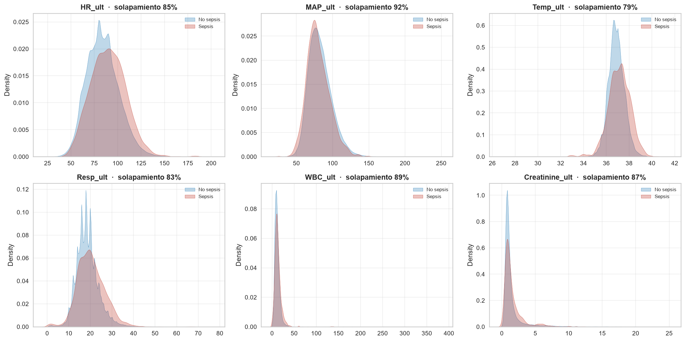
Demostración en vivo
Mover el presupuesto de alarma y ver la sensibilidad y las falsas alarmas reaccionar en tiempo real sobre 310.997 horas de test.
Filtrar por hospital y mostrar el hallazgo A vs B: el mismo umbral detecta 48,0% en A y 35,6% en B.
El simulador: cargar un paciente séptico real y ver la curva de riesgo cruzar el umbral horas antes del onset.
8 Conclusiones y decisiones
Aprendimos que "mejor" depende de qué se mida — el mismo modelo rinde mejor en B como clasificador y mejor en A como sistema de alarma ya desplegado. Y que la honestidad sobre las limitaciones (contexto administrativo, techo estructural) es tan valiosa como el resultado mismo.
Recomendamos desplegarlo como tamizaje complementario en un hospital cuyos datos vio en entrenamiento, con revisión clínica de cada alarma — nunca como reemplazo del criterio médico ni en un centro nuevo sin recalibrar.
Limitaciones declaradas: 6,8 falsas alarmas por acierto; dependencia de contexto administrativo; el dataset no reconstruye la definición clínica completa de sepsis.
Próximos pasos: recalibración por centro, incorporar las variables faltantes del score SOFA, y un piloto prospectivo que mida el impacto real en un turno de UCI.
45 horas de anticipación no son un modelo perfecto —
son tiempo real de reacción que hoy no existe en la práctica clínica estándar.
Gracias
github.com/andresfsanchez74/prediccion-temprana-sepsis